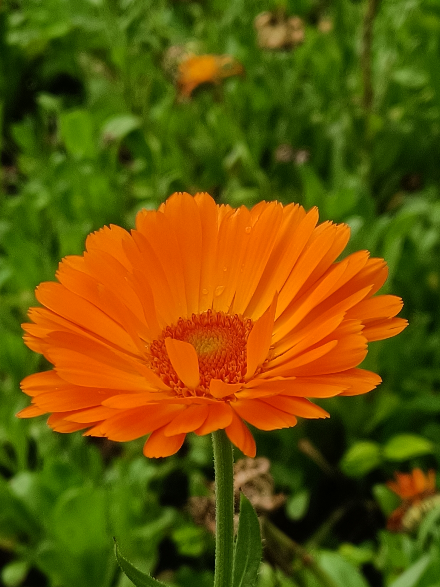

Why I Travel
-  I travel to open my eyes to the world beyond the familiar. Every journey reminds me how vast, diverse, and beautiful our planet is. When I step into a new place, I feel both small and infinite—part of something larger than myself.
- Travel teaches me patience and curiosity. It challenges me to see things differently, to listen, and to grow. From wandering through ancient streets to standing on a windy cliff at sunset, I've found that every destination leaves a quiet mark on who I am.
- I travel not just to see the world, but to understand it—and, in the process, to understand myself.